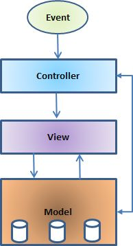

简介
SSM 则指的是 SpringMVC 做控制器(controller)，Spring 管理各层的组件，MyBatis 负责持久化层。
SSH 通常指的是 Struts2 做控制器(controller)，spring 管理各层的组件，hibernate 负责持久化层。
MVC 模型
模型-视图-控制器或通常被称为 MVC，是一种用于开发 web 应用程序的软件设计模式。模型-视图-控制器模式由以下三个部分组成：
-
Model - 模式的最低层，负责维护数据。模型负责管理应用程序的数据。它响应来自视图的请求，而且它也响应来自控制器的指令进行更新自身。
-
View - 负责显示全部或部分的数据给用户。在一个特定格式中数据的展示由一个控制器的决定引发来呈现该数据。
- Controller - 控制器负责响应用户的输入和执行数据模型对象的交互。控制器接收输入，验证输入，然后执行修改数据模型状态的业务操作。
MVC 是受欢迎的，是因为它把应用逻辑从用户接口层中分离，而且支持关注点的分离。在这里，控制器接收应用程序的所有请求，然后与模型一起工作准备好视图需要的任何数据。然后视图使用控制器准备好的数据来生成最终正式的响应。MVC 抽象可以用图形表示，如下所示。

Spring 框架特征
轻量——从大小与开销两方面而言Spring都是轻量的。完整的Spring框架可以在一个大小只有1MB多的JAR文件里发布。并且Spring所需的处理开销也是微不足道的。此外，Spring是非侵入式的：典型地，Spring应用中的对象不依赖于Spring的特定类。
控制反转——Spring通过一种称作控制反转(IoC)的技术促进了低耦合。当应用了IoC，一个对象依赖的其它对象会通过被动的方式传递进来，而不是这个对象自己创建或者查找依赖对象。你可以认为IoC与JNDI相反——不是对象从容器中查找依赖，而是容器在对象初始化时不等对象请求就主动将依赖传递给它。
面向切面——Spring提供了面向切面编程的丰富支持，允许通过分离应用的业务逻辑与系统级服务（例如审计（auditing）和事务（transaction）管理）进行内聚性的开发。应用对象只实现它们应该做的——完成业务逻辑——仅此而已。它们并不负责（甚至是意识）其它的系统级关注点，例如日志或事务支持。
容器——Spring包含并管理应用对象的配置和生命周期，在这个意义上它是一种容器，你可以配置你的每个bean如何被创建——基于一个可配置原型（prototype），你的bean可以创建一个单独的实例或者每次需要时都生成一个新的实例——以及它们是如何相互关联的。然而，Spring不应该被混同于传统的重量级的EJB容器，它们经常是庞大与笨重的，难以使用。
框架——Spring可以将简单的组件配置、组合成为复杂的应用。在Spring中，应用对象被声明式地组合，典型地是在一个XML文件里。Spring也提供了很多基础功能（事务管理、持久化框架集成等等），将应用逻辑的开发留给了你。
MVCM——Spring的作用是整合，但不仅仅限于整合，Spring 框架可以被看做是一个企业解决方案级别的框架。客户端发送请求，服务器控制器（由DispatcherServlet实现的)完成请求的转发，控制器调用一个用于映射的类HandlerMapping，该类用于将请求映射到对应的处理器来处理请求。HandlerMapping 将请求映射到对应的处理器Controller（相当于Action）在Spring 当中如果写一些处理器组件，一般实现Controller 接口，在Controller 中就可以调用一些Service 或DAO 来进行数据操作 ModelAndView 用于存放从DAO 中取出的数据，还可以存放响应视图的一些数据。 如果想将处理结果返回给用户，那么在Spring 框架中还提供一个视图组件ViewResolver，该组件根据Controller 返回的标示，找到对应的视图，将响应response 返回给用户。
所有Spring的这些特征使你能够编写更干净、更可管理、并且更易于测试的代码。它们也为Spring中的各种模块提供了基础支持。
基本框架
Spring 有可能成为所有企业应用程序的一站式服务点，然而，Spring 是模块化的，允许你挑选和选择适用于你的模块，不必要把剩余部分也引入。下面的部分对在 Spring 框架中所有可用的模块给出了详细的介绍。
Spring 框架提供约 20 个模块，可以根据应用程序的要求来使用。

核心容器
核心容器由核心，Bean，上下文和表达式语言模块组成，它们的细节如下：
-
核心模块提供了框架的基本组成部分，包括 IoC 和依赖注入功能。
-
Bean 模块提供 BeanFactory，它是一个工厂模式的复杂实现。
-
上下文模块建立在由核心和 Bean 模块提供的坚实基础上，它是访问定义和配置的任何对象的媒介。ApplicationContext 接口是上下文模块的重点。
- 表达式语言模块在运行时提供了查询和操作一个对象图的强大的表达式语言。
数据访问/集成
数据访问/集成层包括 JDBC，ORM，OXM，JMS 和事务处理模块，它们的细节如下：
-
JDBC 模块提供了删除冗余的 JDBC 相关编码的 JDBC 抽象层。
-
ORM 模块为流行的对象关系映射 API，包括 JPA，JDO，Hibernate 和 iBatis，提供了集成层。
-
OXM 模块提供了抽象层，它支持对 JAXB，Castor，XMLBeans，JiBX 和 XStream 的对象/XML 映射实现。
-
Java 消息服务 JMS 模块包含生产和消费的信息的功能。
- 事务模块为实现特殊接口的类及所有的 POJO 支持编程式和声明式事务管理。
Web
Web 层由 Web，Web-MVC，Web-Socket 和 Web-Portlet 组成，它们的细节如下：
-
Web 模块提供了基本的面向 web 的集成功能，例如多个文件上传的功能和使用 servlet 监听器和面向 web 应用程序的上下文来初始化 IoC 容器。
-
Web-MVC 模块包含 Spring 的模型-视图-控制器（MVC），实现了 web 应用程序。
-
Web-Socket 模块为 WebSocket-based 提供了支持，而且在 web 应用程序中提供了客户端和服务器端之间通信的两种方式。
- Web-Portlet 模块提供了在 portlet 环境中实现 MVC，并且反映了 Web-Servlet 模块的功能。
其他
还有其他一些重要的模块，像 AOP，Aspects，Instrumentation，Web 和测试模块，它们的细节如下：
-
AOP 模块提供了面向方面的编程实现，允许你定义方法拦截器和切入点对代码进行干净地解耦，它实现了应该分离的功能。
-
Aspects 模块提供了与 AspectJ 的集成，这是一个功能强大且成熟的面向切面编程（AOP）框架。
-
Instrumentation 模块在一定的应用服务器中提供了类 instrumentation 的支持和类加载器的实现。
-
Messaging 模块为 STOMP 提供了支持作为在应用程序中 WebSocket 子协议的使用。它也支持一个注解编程模型，它是为了选路和处理来自 WebSocket 客户端的 STOMP 信息。
- 测试模块支持对具有 JUnit 或 TestNG 框架的 Spring 组件的测试。
文档和 JAR 包
Javadoc: spring-5.2.8-javadoc
-
spring-core 和 spring-beans -- Spring 框架的基础，包括控制反转和依赖注入等功能。BeanFactory 是工厂模式的微妙实现，它移除了编码式单例的需要，并且可以把配置和依赖从实际编码逻辑中解耦。
-
spring-context 和 spring-context-support -- 在 Core 和 Bean 模块的基础上建立起来的，它以一种类似于 JNDI 注册的方式访问对象。Context 模块继承自 Bean 模块，并且添加了国际化（比如，使用资源束）、事件传播、资源加载和透明地创建上下文（比如，通过 Servelet 容器）等功能。Context 模块也支持 Java EE 的功能，比如 EJB、JMX 和远程调用等。ApplicationContext 接口是 Context 模块的焦点。spring-context-support 提供了对第三方库集成到 Spring 上下文的支持，比如缓存（EhCache, Guava, JCache）、邮件（JavaMail）、调度（CommonJ, Quartz）、模板引擎（FreeMarker, JasperReports, Velocity）等。
-
spring-expression -- SpEL，Spring 表达式语言, 提供了强大的表达式语言用于在运行时查询和操作对象图。它是 JSP2.1 规范中定义的统一表达式语言的扩展，支持 set 和 get 属性值、属性赋值、方法调用、访问数组集合及索引的内容、逻辑算术运算、命名变量、通过名字从 Spring IoC 容器检索对象，还支持列表的投影、选择以及聚合等。
-
spring-web -- 模块提供面向 web 的基本功能和面向 web 的应用上下文，比如多部分（multipart）文件上传功能、使用 Servlet 监听器初始化 IoC 容器等。它还包括 HTTP 客户端以及 Spring 远程调用中与 web 相关的部分。
-
spring-webmvc -- 为 web 应用提供了模型视图控制（MVC）和 REST Web 服务的实现。Spring 的 MVC 框架可以使领域模型代码和web表单完全地分离，且可以与 Spring 框架的其它所有功能进行集成。
-
spring-webmvc-portlet --提供了用于 Portlet 环境的 MVC 实现，并反映了 spring-webmvc 模块的功能。
-
spring-websocket -- websocket 是 Html5 新增加特性之一，目的是浏览器与服务端建立全双工的通信方式。
-
spring-aop -- 提供了面向切面编程（AOP）的实现，可以定义诸如方法拦截器和切入点等，从而使实现功能的代码彻底的解耦出来。
-
spring-aspects -- 提供了对 AspectJ 的集成。
-
spring-instrument -- 提供了对检测类的支持和用于特定的应用服务器的类加载器的实现。
-
spring-instrument-tomcat -- 包含了用于 tomcat 的 Spring 检测代理。
-
spring-jdbc -- 提供了 JDBC 抽象层，它消除了冗长的 JDBC 编码和对数据库供应商特定错误代码的解析。
-
spring-jms -- 包含生产（produce）和消费（consume）消息的功能。
-
spring-messaging -- Spring 4 包含的 spring-messaging 模块是从 Spring 集成项目的关键抽象中提取出来的，这些项目包括 Message、MessageChannel、MessageHandler 和其它服务于消息处理的项目。这个模块也包含一系列的注解用于映射消息到方法，这类似于 Spring MVC 基于编码模型的注解。
-
spring-orm -- 提供了对流行的对象关系映射 API 的集成，包括 JPA、JDO 和 Hibernate 等。通过此模块可以让这些 ORM 框架和 Spring 的其它功能整合，比如前面提及的事务管理。
-
spring-oxm -- 提供了对 OXM 实现的支持，比如 JAXB、Castor、XML Beans、JiBX、XStream 等。
-
spring-tx -- 支持编程式事务和声明式事务，可用于实现了特定接口的类和所有的POJO对象。
-
spring-test -- 通过 JUnit 和 TestNG 组件支持单元测试和集成测试。它提供了一致性地加载和缓存 Spring 上下文，也提供了用于单独测试代码的模拟对象（mock object）。
一个松耦合实例
applicationContext.xml
<?xml version="1.0" encoding="UTF-8"?> <beans xmlns="http://www.springframework.org/schema/beans" xmlns:xsi="http://www.w3.org/2001/XMLSchema-instance" xsi:schemaLocation="http://www.springframework.org/schema/beans http://www.springframework.org/schema/beans/spring-beans-4.0.xsd"> <bean id="OutputHelper" class="cm.nate.spring.OutputHelper"> <!-- 此处配置 OutputGenerator --> <property name="outputGenerator" ref="JsonOutputGenerator" /> </bean> <bean id="Person" class="cm.nate.spring.model.Person"> <property name="id" value="1001" /> <property name="name" value="jiwanger" /> <property name="sex" value="男" /> </bean> <bean id="XmlOutputGenerator" class="cm.nate.spring.impl.XmlOutputGererator" /> <bean id="JsonOutputGenerator" class="cm.nate.spring.impl.JsonOutputGererator" /> </beans>
java 代码
/** IOutputGenerator.java */
public interface IOutputGenerator {
void generateOutput(Person obj);
}
/** JsonOutputGererator.java */
public class JsonOutputGererator implements IOutputGenerator {
@Override
public void generateOutput(Person obj) {
System.out.println("{\"id\":" + obj.getId() + ", \"name\":\""
+ obj.getName() + "\", \"sex\":" + obj.getSex() + "}");
}
}
/** XmlOutputGererator.java */
public class XmlOutputGererator implements IOutputGenerator {
@Override
public void generateOutput(Person obj) {
System.out
.println("" + obj.getId() + " " + ""
+ obj.getName() + " " + "" + obj.getSex()
+ " ");
}
}
/** OutputHelper.java */
public class OutputHelper {
private IOutputGenerator outputGenerator = new JsonOutputGererator();
public void setOutputGenerator(IOutputGenerator outputGenerator){
this.outputGenerator = outputGenerator;
}
public void generateOutput(Person obj){
outputGenerator.generateOutput(obj);
}
}
/** Person.java */
public class Person implements Serializable {
private String id;
private String name;
private char sex;
public String getId() {
return id;
}
public void setId(String id) {
this.id = id;
}
public String getName() {
return name;
}
public void setName(String name) {
this.name = name;
}
public char getSex() {
return sex;
}
public void setSex(char sex) {
this.sex = sex;
}
}
/** 测试 */
public static void main(String[] args) {
ApplicationContext context = new ClassPathXmlApplicationContext(
"applicationContext.xml");
Person person = (Person) context.getBean("Person");
OutputHelper output = (OutputHelper) context.getBean("OutputHelper");
output.generateOutput(person);
}
Bean
<?xml version="1.0" encoding="UTF-8"?>
<beans xmlns="http://www.springframework.org/schema/beans"
xmlns:xsi="http://www.w3.org/2001/XMLSchema-instance"
xsi:schemaLocation="http://www.springframework.org/schema/beans
http://www.springframework.org/schema/beans/spring-beans-3.0.xsd">
<property name="message" value="Hello World!" />
</beans>
Bean 定义
| 属性 | 描述 |
|---|---|
| class | 这个属性是强制性的，并且指定用来创建 bean 的 bean 类。 |
| name | 这个属性指定唯一的 bean 标识符。在基于 XML 的配置元数据中，你可以使用 ID 和/或 name 属性来指定 bean 标识符。 |
| scope | 这个属性指定由特定的 bean 定义创建的对象的作用域，它将会在 bean 作用域的章节中进行讨论。 |
| constructor-arg | 它是用来注入依赖关系的，并会在接下来的章节中进行讨论。 |
| properties | 它是用来注入依赖关系的，并会在接下来的章节中进行讨论。 |
| autowiring mode | 它是用来注入依赖关系的，并会在接下来的章节中进行讨论。 |
| lazy-initialization mode | 延迟初始化的 bean 告诉 IoC 容器在它第一次被请求时，而不是在启动时去创建一个 bean 实例。 |
| initialization 方法 | 在 bean 的所有必需的属性被容器设置之后，调用回调方法。它将会在 bean 的生命周期章节中进行讨论。 |
| destruction 方法 | 当包含该 bean 的容器被销毁时，使用回调方法。它将会在 bean 的生命周期章节中进行讨论。 |
Bean 作用域
当在 Spring 中定义一个 Bean 时，你必须声明该 bean 的作用域的选项。例如，为了强制 Spring 在每次需要时都产生一个新的 bean 实例，你应该声明 bean 的作用域的属性为 prototype。同理，如果你想让 Spring 在每次需要时都返回同一个bean实例，你应该声明 bean 的作用域的属性为 singleton。
| 作用域 | 描述 |
|---|---|
| singleton | 该作用域将 bean 的定义的限制在每一个 Spring IoC 容器中的一个单一实例(默认)。 |
| prototype | 该作用域将单一 bean 的定义限制在任意数量的对象实例。 |
| request | 该作用域将 bean 的定义限制为 HTTP 请求。只在 web-aware Spring ApplicationContext 的上下文中有效。 |
| session | 该作用域将 bean 的定义限制为 HTTP 会话。 只在web-aware Spring ApplicationContext的上下文中有效。 |
| global-session | 该作用域将 bean 的定义限制为全局 HTTP 会话。只在 web-aware Spring ApplicationContext 的上下文中有效。 |
<bean id="helloWorld" class="cm.nate.spring.modal.HelloWorld" scope="singleton"> <property name="message" value="Hello World!" /> </bean>
Bean 生命周期
理解 Spring bean 的生命周期很容易。当一个 bean 被实例化时，它可能需要执行一些初始化使它转换成可用状态。同样，当 bean 不再需要，并且从容器中移除时，可能需要做一些清除工作。
有两种方法实现初始化和销毁方法:
-
实现 InitializingBean 接口和 DisposableBean 接口
public class HelloWorld implements InitializingBean, DisposableBean { private String message; public void setMessage(String message) { this.message = message; } public void getMessage() { System.out.println("Your Message : " + message); } @Override public void destroy() throws Exception { } @Override public void afterPropertiesSet() throws Exception { } } -
在基于 XML 的配置元数据的情况下，你可以使用 init-method="init" 或 destroy-method="destroy" 来指定方法
<bean id="helloWorld" class="cm.nate.spring.modal.HelloWorld" init-method="init" destroy-method="destroy"> <property name="message" value="Hello World!" /> </bean>
建议你不要使用 InitializingBean 或者 DisposableBean 的回调方法，因为 XML 配置在命名方法上提供了极大的灵活性。
Bean 后置处理器
BeanPostProcessor 接口定义回调方法，你可以实现该方法来提供自己的实例化逻辑，依赖解析逻辑等。你也可以在 Spring 容器通过插入一个或多个 BeanPostProcessor 的实现来完成实例化，配置和初始化一个bean之后实现一些自定义逻辑回调方法。
这是实现 BeanPostProcessor 的非常简单的例子，它在任何 bean 的初始化的之前和之后输入该 bean 的名称。你可以在初始化 bean 的之前和之后实现更复杂的逻辑，因为你有两个访问内置 bean 对象的后置处理程序的方法。
public class InitHellowWorld implements BeanPostProcessor {
public Object postProcessBeforeInitialization(Object bean, String beanName)
throws BeansException {
System.out.println("BeforeInitialization : " + beanName);
return bean; // you can return any other object as well
}
public Object postProcessAfterInitialization(Object bean, String beanName)
throws BeansException {
System.out.println("AfterInitialization : " + beanName);
return bean; // you can return any other object as well
}
}
/** 主类的 main 方法中调用 */
AbstractApplicationContext context = new ClassPathXmlApplicationContext(
"Beans.xml");
HelloWorld obj = (HelloWorld) context.getBean("helloWorld");
obj.getMessage();
Bean 定义继承
bean 定义可以包含很多的配置信息，包括构造函数的参数，属性值，容器的具体信息例如初始化方法，静态工厂方法名，等等。
子 bean 的定义继承父定义的配置数据。子定义可以根据需要重写一些值，或者添加其他值。 Spring Bean 定义的继承与 Java 类的继承无关，但是继承的概念是一样的。你可以定义一个父 bean 的定义作为模板和其他子 bean 就可以从父 bean 中继承所需的配置。
<bean id="helloWorld" class="com.tutorialspoint.HelloWorld"> <property name="message1" value="Hello World!" /> <property name="message2" value="Hello Second World!" /> </bean> <bean id="helloIndia" class="com.tutorialspoint.HelloIndia" parent="helloWorld"> <property name="message1" value="Hello India!" /> </bean>
依赖注入
每个基于应用程序的 java 都有几个对象，这些对象一起工作来呈现出终端用户所看到的工作的应用程序。当编写一个复杂的 Java 应用程序时，应用程序类应该尽可能独立于其他 Java 类来增加这些类重用的可能性，并且在做单元测试时，测试独立于其他类的独立性。依赖注入（或有时称为布线）有助于把这些类粘合在一起，同时保持他们独立。
/**
* 在这里，TextEditor 不应该担心 SpellChecker 的实现。SpellChecker 将会独立实现，
* 并且在 TextEditor 实例化的时候将提供给 TextEditor，整个过程是由 Spring 框架的控制。
* 在这里，我们已经从 TextEditor 中删除了全面控制，并且把它保存到其他地方（即 XML 配置文件），
* 且依赖关系（即 SpellChecker 类）通过类构造函数被注入到 TextEditor 类中。因此，控制流通过依赖注入（DI）已经“反转”，
* 因为你已经有效地委托依赖关系到一些外部系统。
* 依赖注入的第二种方法是通过 TextEditor 类的 Setter 方法，我们将创建 SpellChecker 实例，
* 该实例将被用于调用 setter 方法来初始化 TextEditor 的属性。
*/
public class TextEditor {
private SpellChecker spellChecker;
public TextEditor() {
spellChecker = new SpellChecker();
}
}
有两种方式的依赖注入:
-
基于类构造函数 -- 当容器调用带有多个参数的构造函数类时，实现基于构造函数的 DI，每个代表在其他类中的一个依赖关系。
/** SpellChecker 类 **/ package cm.nate.spring.model; public class SpellChecker { public SpellChecker() { System.out.println("Inside SpellChecker constructor."); } public void checkSpelling() { System.out.println("Inside checkSpelling."); } } /** TextEditor 类 **/ package cm.nate.spring.model; public class TextEditor { private SpellChecker spellChecker; public TextEditor(SpellChecker spellChecker) { System.out.println("Inside TextEditor constructor."); this.spellChecker = spellChecker; } public void spellCheck() { spellChecker.checkSpelling(); } } /** Bears.xml 文件 **/ <bean id="textEditor" class="cm.nate.spring.model.TextEditor"> <constructor-arg ref="spellChecker" /> </bean> <bean id="spellChecker" class="cm.nate.spring.model.SpellChecker" /> /** main 方法 **/ public class Main { public static void main(String[] args) { AbstractApplicationContext context = new ClassPathXmlApplicationContext("Beans.xml"); TextEditor te = (TextEditor) context.getBean("textEditor"); /** * 在构造 TextEditor 前, 会先构造 SpellChecker, 因此输出如下: * Inside SpellChecker constructor. * Inside TextEditor constructor. * Inside checkSpelling. */ te.spellCheck(); } } -
基于 setter 方法 -- 基于 setter 方法的 DI 是通过在调用无参数的构造函数或无参数的静态工厂方法实例化 bean 之后容器调用 beans 的 setter 方法来实现的。
/** TextEditor 类做如下修改 **/ package cm.nate.spring.model; public class TextEditor { private SpellChecker spellChecker; public void setSpellChecker(SpellChecker spellChecker) { System.out.println("Inside setSpellChecker."); this.spellChecker = spellChecker; } public SpellChecker getSpellChecker() { return spellChecker; } public void spellCheck() { spellChecker.checkSpelling(); } } /** Beans.xml 做如下修改 **/ <bean id="textEditor" class="cm.nate.spring.model.TextEditor"> <property name="spellChecker" ref="spellChecker"/> </bean> <bean id="spellChecker" class="cm.nate.spring.model.SpellChecker" /> /** 注入内部 Beans，Beans.xml 做如下修改，达到上面一样效果 **/ <bean id="textEditor" class="cm.nate.spring.model.TextEditor"> <property name="spellChecker"> <bean id="spellChecker" class="cm.nate.spring.model.SpellChecker"/> </property> </bean>
注入集合
注入数据到
JavaCollection
类的集合中：
package cm.nate.spring.model;
import java.util.List;
import java.util.Map;
import java.util.Properties;
import java.util.Set;
public class JavaCollection {
List addressList;
Set addressSet;
Map addressMap;
Properties addressProp;
public void setAddressList(List addressList) {
this.addressList = addressList;
}
public List getAddressList() {
System.out.println("List Elements :" + addressList);
return addressList;
}
public void setAddressSet(Set addressSet) {
this.addressSet = addressSet;
}
public Set getAddressSet() {
System.out.println("Set Elements :" + addressSet);
return addressSet;
}
public void setAddressMap(Map addressMap) {
this.addressMap = addressMap;
}
public Map getAddressMap() {
System.out.println("Map Elements :" + addressMap);
return addressMap;
}
public void setAddressProp(Properties addressProp) {
this.addressProp = addressProp;
}
public Properties getAddressProp() {
System.out.println("Property Elements :" + addressProp);
return addressProp;
}
}
Beans.xml
配置
<beans xmlns="http://www.springframework.org/schema/beans"
xmlns:xsi="http://www.w3.org/2001/XMLSchema-instance"
xsi:schemaLocation="http://www.springframework.org/schema/beans
http://www.springframework.org/schema/beans/spring-beans-3.0.xsd">
INDIA
Pakistan
USA
USA
INDIA
Pakistan
USA
USA
INDIA
Pakistan
USA
USA
</beans>
测试数据是否注入到集合中
public class Main {
public static void main(String[] args) {
AbstractApplicationContext context = new ClassPathXmlApplicationContext(
"Beans.xml");
JavaCollection jc = (JavaCollection) context.getBean("javaCollection");
jc.getAddressList();
jc.getAddressSet();
jc.getAddressMap();
jc.getAddressProp();
}
}
Beans 自动装配
Spring 容器可以在不使用 <constructor-arg> 和 <property> 元素的情况下自动装配相互协作的 bean 之间的关系，这有助于减少编写一个大的基于 Spring 的应用程序的 XML 配置的数量。
自动装配模式
下列自动装配模式，它们可用于指示 Spring 容器为来使用自动装配进行依赖注入。你可以使用 <bean> 元素的 autowire 属性为一个 bean 定义指定自动装配模式。
| 模式 | 描述 |
|---|---|
| no | 这是默认的设置，它意味着没有自动装配，你应该使用显式的bean引用来连线。你不用为了连线做特殊的事。在依赖注入章节你已经看到这个了。 |
| byName | 由属性名自动装配。Spring 容器看到在 XML 配置文件中 bean 的自动装配的属性设置为 byName。然后尝试匹配，并且将它的属性与在配置文件中被定义为相同名称的 beans 的属性进行连接。 |
| byType | 由属性数据类型自动装配。Spring 容器看到在 XML 配置文件中 bean 的自动装配的属性设置为 byType。然后如果它的类型匹配配置文件中的一个确切的 bean 名称，它将尝试匹配和连接属性的类型。如果存在不止一个这样的 bean，则一个致命的异常将会被抛出。 |
| constructor | 类似于 byType，但该类型适用于构造函数参数类型。如果在容器中没有一个构造函数参数类型的 bean，则一个致命错误将会发生。 |
| autodetect | Spring首先尝试通过 constructor 使用自动装配来连接，如果它不执行，Spring 尝试通过 byType 来自动装配。 |
/** TextEditor 类 **/
package cm.nate.spring.model;
public class TextEditor {
private SpellChecker spellChecker;
private Formater formater;
public TextEditor(SpellChecker spellChecker) {
System.out.println("Inside spellChecker.");
this.spellChecker = spellChecker;
}
public SpellChecker getSpellChecker() {
return spellChecker;
}
public Formater getFormater() {
return formater;
}
public void setFormater(Formater formater) {
this.formater = formater;
}
public void spellCheck() {
spellChecker.checkSpelling();
}
public void format() {
formater.format();
}
}
/** SpellChecker 类 **/
package cm.nate.spring.model;
public class SpellChecker {
public SpellChecker() {
System.out.println("Inside SpellChecker constructor.");
}
public void checkSpelling() {
System.out.println("Inside checkSpelling.");
}
}
/** Formater 类 **/
package cm.nate.spring.model;
public class Formater {
public Formater() {
System.out.println("Inside Formater constructor.");
}
public void format() {
System.out.println("Inside formating.");
}
}
Bears.xml
文件
<beans xmlns="http://www.springframework.org/schema/beans"
xmlns:xsi="http://www.w3.org/2001/XMLSchema-instance"
xsi:schemaLocation="http://www.springframework.org/schema/beans
http://www.springframework.org/schema/beans/spring-beans-3.0.xsd">
<bean id="textEditor" class="cm.nate.spring.model.TextEditor"
autowire="byName">
<constructor-arg ref="spellChecker" />
</bean>
<bean id="spellChecker" class="cm.nate.spring.model.SpellChecker" />
<bean id="formater" class="cm.nate.spring.model.Formater" />
</beans>
基于注解的配置
从 Spring 2.5 开始就可以使用注解来配置依赖注入。而不是采用 XML 来描述一个 bean 连线，你可以使用相关类，方法或字段声明的注解，将 bean 配置移动到组件类本身。
在 XML 注入之前进行注解注入，因此后者的配置将通过两种方式的属性连线被前者重写。
注解连线在默认情况下在 Spring 容器中不打开。因此，在可以使用基于注解的连线之前，我们将需要在我们的 Spring 配置文件中启用它。所以如果你想在 Spring 应用程序中使用的任何注解，可以考虑到下面的配置文件。
<beans xmlns="http://www.springframework.org/schema/beans"
xmlns:xsi="http://www.w3.org/2001/XMLSchema-instance"
xmlns:context="http://www.springframework.org/schema/context"
xsi:schemaLocation="http://www.springframework.org/schema/beans
http://www.springframework.org/schema/beans/spring-beans-3.0.xsd
http://www.springframework.org/schema/context
http://www.springframework.org/schema/context/spring-context-3.0.xsd">
<context:annotation-config />
</beans>
一旦
<context:annotation-config>
被配置后，你就可以开始注解你的代码，表明 Spring
应该自动连接值到属性，方法和构造函数。让我们来看看几个重要的注解，并且了解它们是如何工作的：
| 序号 | 注解 & 描述 |
|---|---|
| 1 | @Required
@Required 注解应用于 bean 属性的 setter 方法。它表明受影响的 bean 属性 在配置时必须放在 XML 配置文件中，否则容器就会抛出一个 BeanInitializationException 异常。 |
| 2 | @Autowired
@Autowired 注解可以应用到 bean 属性的 setter 方法，非 setter 方法，构造函数和属性。 |
| 3 | @Qualifier
通过指定确切的将被连线的 bean，@Autowired 和 @Qualifier 注解可以用来删除混乱。 |
| 4 | JSR-250 Annotations
Spring 支持 JSR-250 的基础的注解，其中包括了 @Resource，@PostConstruct 和 @PreDestroy 注解。 |
-
@Required注解, 表明受影响的 bean 属性 在配置时必须放在 XML 配置文件中。public class Student { private Integer age; private String name; @Required public void setAge(Integer age) { this.age = age; } public Integer getAge() { return age; } @Required public void setName(String name) { this.name = name; } public String getName() { return name; } } <beans xmlns="http://www.springframework.org/schema/beans" xmlns:xsi="http://www.w3.org/2001/XMLSchema-instance" xmlns:context="http://www.springframework.org/schema/context" xsi:schemaLocation="http://www.springframework.org/schema/beans http://www.springframework.org/schema/beans/spring-beans-3.0.xsd http://www.springframework.org/schema/context http://www.springframework.org/schema/context/spring-context-3.0.xsd"> <context:annotation-config /> <bean id="student" class="cm.nate.spring.model.Student"> <property name="name" value="jiwanger" /> <property name="age" value="11" /> </bean> </beans> -
@Autowired注解，可以应用到 bean 属性的 setter 方法，非 setter 方法，构造函数和属性。使用就像 bean 的自动装配。public class TextEditor { @Autowired // 应用于属性 private SpellChecker spellChecker; private Formater formater; @Autowired // 应用于构造方法 public TextEditor(SpellChecker spellChecker) { this.spellChecker = spellChecker; } public SpellChecker getSpellChecker() { return spellChecker; } public Formater getFormater() { return formater; } @Autowired(required=false) // 应用于方法，默认情况下，@Autowired 注释意味着依赖是必须的 public void setFormater(Formater formater) { this.formater = formater; } public void spellCheck() { spellChecker.checkSpelling(); } public void format() { formater.format(); } } <beans xmlns="http://www.springframework.org/schema/beans" xmlns:xsi="http://www.w3.org/2001/XMLSchema-instance" xmlns:context="http://www.springframework.org/schema/context" xsi:schemaLocation="http://www.springframework.org/schema/beans http://www.springframework.org/schema/beans/spring-beans-3.0.xsd http://www.springframework.org/schema/context http://www.springframework.org/schema/context/spring-context-3.0.xsd"> <context:annotation-config /> <bean id="textEditor" class="cm.nate.spring.model.TextEditor" /> <bean id="spellChecker" class="cm.nate.spring.model.SpellChecker" /> <bean id="formater" class="cm.nate.spring.model.Formater" /> </beans> -
@Qualifier注解，可能会有这样一种情况，当你创建多个具有相同类型的 bean 时，并且想要用一个属性只为它们其中的一个进行装配，在这种情况下，你可以使用 @Qualifier 注释和 @Autowired 注释通过指定哪一个真正的 bean 将会被装配来消除混乱。public class TextEditor { @Autowired @Qualifier("spellChecker2") // 指定装配 spellChecker2 private SpellChecker spellChecker; public SpellChecker getSpellChecker() { return spellChecker; } public void spellCheck() { spellChecker.checkSpelling(); } } public class SpellChecker { private String name; public SpellChecker() { System.out.println("Inside SpellChecker."); } public void checkSpelling() { System.out.println("Name:" + name + ", Inside checkSpelling."); // 显示装配的 SpellChecker 名字 } public String getName() { return name; } @Required public void setName(String name) { this.name = name; } } <beans xmlns="http://www.springframework.org/schema/beans" xmlns:xsi="http://www.w3.org/2001/XMLSchema-instance" xmlns:context="http://www.springframework.org/schema/context" xsi:schemaLocation="http://www.springframework.org/schema/beans http://www.springframework.org/schema/beans/spring-beans-3.0.xsd http://www.springframework.org/schema/context http://www.springframework.org/schema/context/spring-context-3.0.xsd"> <context:annotation-config /> <bean id="textEditor" class="cm.nate.spring.model.TextEditor" /> <bean id="spellChecker" class="cm.nate.spring.model.SpellChecker" > <property name="name" value="C1" /> </bean> <bean id="spellChecker2" class="cm.nate.spring.model.SpellChecker" > <property name="name" value="C2" /> </bean> </beans> -
JSR-250注释，Spring 还使用基于 JSR-250 注释，它包括 @PostConstruct， @PreDestroy 和 @Resource 注释。public class TextEditor { @Resource(name = "spellChecker") // 相关于 byName 类型的自动装配 private SpellChecker spellChecker; public void setSpellChecker(SpellChecker spellChecker) { this.spellChecker = spellChecker; } public SpellChecker getSpellChecker() { return spellChecker; } public void spellCheck() { spellChecker.checkSpelling(); } @PostConstruct // 在 bean 的实例化阶段会立即被调用，相当于在 bean 中使用 init-method public void init() { System.out.println("Bean is going through init."); } @PreDestroy // 在一个 bean 从容器中删除之前被调用，相当于在 bean 中使用 destroy-method public void destroy() { System.out.println("Bean will destroy now."); } } <beans xmlns="http://www.springframework.org/schema/beans" xmlns:xsi="http://www.w3.org/2001/XMLSchema-instance" xmlns:context="http://www.springframework.org/schema/context" xsi:schemaLocation="http://www.springframework.org/schema/beans http://www.springframework.org/schema/beans/spring-beans-3.0.xsd http://www.springframework.org/schema/context http://www.springframework.org/schema/context/spring-context-3.0.xsd"> <context:annotation-config /> <bean id="textEditor" class="cm.nate.spring.model.TextEditor" init-method="init" destroy-method="destroy" /> <bean id="spellChecker" class="cm.nate.spring.model.SpellChecker"> <property name="name" value="C1" /> </bean> </beans>
基于 Java 的配置
到目前为止，你已经看到如何使用 XML 配置文件来配置 Spring bean。如果你熟悉使用 XML 配置，那么我会说，不需要再学习如何进行基于 Java 的配置是，因为你要达到相同的结果，可以使用其他可用的配置。
带有 @Configuration 的注解类表示这个类可以使用 Spring IoC 容器作为 bean 定义的来源。
@Bean 注解告诉 Spring，一个带有 @Bean 的注解方法将返回一个对象，该对象应该被注册为在 Spring 应用程序上下文中的 bean。
@import 注解允许从另一个配置类中加载 @Bean 定义。
@Configuration
public class HelloWorldConfig {
@Bean
public HelloWorld helloWorld(){
return new HelloWorld();
}
}
// 上面的代码将等同于下面的 XML 配置：
// <bean id="helloWorld" class="com.tutorialspoint.HelloWorld" />
AbstractApplicationContext ctx = new AnnotationConfigApplicationContext(HelloWorldConfig.class);
HelloWorld helloWorld = ctx.getBean(HelloWorld.class);
helloWorld.setMessage("Hello World!");
helloWorld.getMessage();
Spring 框架的 AOP
AOP 简介
面向切面编程(AOP: Aspect Oriented Programming) -- 通过预编译方式和运行期动态代理实现在不修改源代码的情况下给程序动态统一添加功能的一种技术。AOP 是 OOP 的延续，是软件开发中的一个热点，也是 Spring 框架中的一个重要内容，是函数式编程的一种衍生范型。利用 AOP 可以对业务逻辑的各个部分进行隔离，从而使得业务逻辑各部分之间的耦合度降低，提高程序的可重用性，同时提高了开发的效率。
AOP 的核心思想: 将应用程序中的商业逻辑同对其提供支持的通用服务进行分离。
AOP 是一个概念，并没有设定具体语言的实现，它能克服那些只有单继承特性语言的缺点。AspectJ 是 AOP 的一个很悠久的实现，它能够和 Java 配合起来使用。
spring-aop -- 提供了面向切面编程（AOP）的实现，可以定义诸如方法拦截器和切入点等，从而使实现功能的代码彻底的解耦出来。
spring-aspects -- 提供了对 AspectJ 的集成。
AOP 和 OOP
OOP 引入封装、继承和多态性等概念来建立一种对象层次结构，用以模拟公共行为的一个集合。当我们需要为分散的对象引入公共行为的时候，OOP则显得无能为力。也就是说，OOP允许你定义从上到下的关系，但并不适合定义从左到右的关系。例如日志功能。日志代码往往水平地散布在所有对象层次中，而与它所散布到的对象的核心功能毫无关系。对于其他类型的代码，如安全性、异常处理和透明的持续性也是如此。这种散布在各处的无关的代码被称为横切（cross-cutting）代码，在OOP设计中，它导致了大量代码的重复，而不利于各个模块的重用。
AOP 利用一种称为“横切”的技术，剖解开封装的对象内部，并将那些影响了多个类的公共行为封装到一个可重用模块，并将其名为“Aspect”，即方面。所谓“方面”，简单地说，就是将那些与业务无关，却为业务模块所共同调用的逻辑或责任封装起来，便于减少系统的重复代码，降低模块间的耦合度，并有利于未来的可操作性和可维护性。AOP代表的是一个横向的关系，如果说“对象”是一个空心的圆柱体，其中封装的是对象的属性和行为；那么面向方面编程的方法，就仿佛一把利刃，将这些空心圆柱体剖开，以获得其内部的消息。而剖开的切面，也就是所谓的“方面”了。然后它又以巧夺天功的妙手将这些剖开的切面复原，不留痕迹。
AOP 把软件系统分为两个部分：核心关注点和横切关注点。业务处理的主要流程是核心关注点，与之关系不大的部分是横切关注点。横切关注点的一个特点是，他们经常发生在核心关注点的多处，而各处都基本相似。比如权限认证、日志、事务处理。AOP 的作用在于分离系统中的各种关注点，将核心关注点和横切关注点分离开来。
AOP相关概念
-
切面(Aspect) -- 一个关注点的模块化，这个关注点实现可能另外横切多个对象。事务管理是 J2EE 应用中一个很好的横切关注点例子。方面用 Spring 的 Advisor 或拦截器实现。
-
连接点(Join point) -- 程序执行过程中明确的点，如方法的调用或特定的异常被抛出。
-
通知(Advice) -- 在特定的连接点，AOP 框架执行的动作。各种类型的通知包括
around、before和throws通知。通知类型将在下面讨论。许多 AOP 框架包括 Spring 都是以拦截器做通知模型，维护一个“围绕”连接点的拦截器链。Spring 中定义了四个 Advice:BeforeAdvice,AfterAdvice,ThrowAdvice和DynamicIntroductionAdvice。 -
切入点(Pointcut) -- 指定一个通知将被引发的一系列连接点的集合。AOP框架必须允许开发者指定切入点：例如，使用正则表达式。 Spring 定义了 Pointcut 接口，用来组合 MethodMatcher 和 ClassFilter，可以通过名字很清楚的理解， MethodMatcher 是用来检查目标类的方法是否可以被应用此通知，而 ClassFilter 是用来检查 Pointcut 是否应该应用到目标类上
-
引入(Introduction) -- 添加方法或字段到被通知的类。 Spring 允许引入新的接口到任何被通知的对象。例如，你可以使用一个引入使任何对象实现
IsModified接口，来简化缓存。Spring 中要使用Introduction, 可有通过DelegatingIntroductionInterceptor来实现通知，通过DefaultIntroductionAdvisor来配置 Advice 和代理类要实现的接口。 -
目标对象(Target Object) -- 包含连接点的对象。也被称作被通知或被代理对象。
-
AOP 代理(AOP Proxy) -- AOP 框架创建的对象，包含通知。 在 Spring 中，AOP 代理可以是 JDK 动态代理或者 CGLIB 代理。
-
织入(Weaving) -- 组装方面来创建一个被通知对象。这可以在编译时完成（例如使用 AspectJ 编译器），也可以在运行时完成。Spring 和其他纯 Java AOP 框架一样，在运行时完成织入。
Spring AOP 使用
WEBMVC 实例
使用 Gradle 创建 SpringMVC 项目，支持 MySQL 访问
-
创建目录
spring$ mkdir spring $ cd spring
-
使用 Gradle 初始化类型为
java-application项目$ gradle init --type java-application # 本实例使用的是 6.6.1 版本，基础包为 io.jiwanger.spring
-
修改
build.gradle文件如下:plugins { id 'java' id 'war' } repositories { mavenLocal() maven{ url 'http://maven.aliyun.com/nexus/content/groups/public/'} maven { url 'https://jitpack.io' } jcenter() } dependencies { // guava implementation 'com.google.guava:guava:29.0-jre' // servlet api providedCompile group: 'javax', name: 'javaee-api', version: '8.0.1' // spring 接入 implementation 'org.springframework:spring-webmvc:5.2.8.RELEASE' implementation 'org.springframework:spring-beans:5.2.8.RELEASE' implementation 'org.springframework:spring-context:5.2.8.RELEASE' implementation 'org.springframework:spring-context-support:5.2.8.RELEASE' implementation 'org.springframework:spring-web:5.2.8.RELEASE' implementation 'org.springframework:spring-tx:5.2.8.RELEASE' implementation 'org.springframework:spring-jdbc:5.2.8.RELEASE' implementation 'org.springframework:spring-test:5.2.8.RELEASE' // mysql 驱动 implementation 'mysql:mysql-connector-java:8.0.21' // Spring json 支持 implementation 'com.fasterxml.jackson.core:jackson-core:2.9.4' implementation 'com.fasterxml.jackson.core:jackson-annotations:2.9.4' implementation 'com.fasterxml.jackson.core:jackson-databind:2.9.4' // Spring Mybatis 集成 implementation 'org.mybatis:mybatis:3.5.5' implementation 'org.mybatis:mybatis-spring:2.0.5' // JUnit test framework testImplementation 'junit:junit:4.13' } // 复制 war 到本机安装的 tomcat 的 webapps 目录下 task publish(dependsOn: 'war', type: Copy) { from './build/libs/' into '/home/nate/soft/apache-tomcat-8.5.24/webapps/' rename { String fileName -> fileName.replace('-1.0-SNAPSHOT', '') } } -
创建
src/main/webapp/WEB-INF/目录，并在此目录创建web.xml文件，内容如下:<web-app xmlns="http://xmlns.jcp.org/xml/ns/javaee" xmlns:xsi="http://www.w3.org/2001/XMLSchema-instance" xsi:schemaLocation="http://xmlns.jcp.org/xml/ns/javaee http://xmlns.jcp.org/xml/ns/javaee/web-app_4_0.xsd" version="4.0">contextConfigLocation classpath:application-context.xml org.springframework.web.context.ContextLoaderListener CharacterEncodingFilter org.springframework.web.filter.CharacterEncodingFilter encoding utf-8 CharacterEncodingFilter /* dispatcher org.springframework.web.servlet.DispatcherServlet contextConfigLocation classpath:dispatcher-servlet.xml 1 dispatcher / -
在
src/main/resources/目录下创建application-context.xml文件, 内容如下:<beans xmlns="http://www.springframework.org/schema/beans" xmlns:xsi="http://www.w3.org/2001/XMLSchema-instance" xmlns:tx="http://www.springframework.org/schema/tx" xmlns:context="http://www.springframework.org/schema/context" xmlns:mvc="http://www.springframework.org/schema/mvc" xsi:schemaLocation="http://www.springframework.org/schema/beans http://www.springframework.org/schema/beans/spring-beans.xsd http://www.springframework.org/schema/tx http://www.springframework.org/schema/tx/spring-tx.xsd http://www.springframework.org/schema/context https://www.springframework.org/schema/context/spring-context.xsd http://www.springframework.org/schema/mvc https://www.springframework.org/schema/mvc/spring-mvc.xsd"> <mvc:annotation-driven/> <context:component-scan base-package="io.jiwanger.spring"/> </beans> -
在
src/main/resources/目录下创建dispatcher-servlet.xml文件, 内容如下:<beans xmlns="http://www.springframework.org/schema/beans" xmlns:xsi="http://www.w3.org/2001/XMLSchema-instance" xsi:schemaLocation="http://www.springframework.org/schema/beans http://www.springframework.org/schema/beans/spring-beans.xsd"> <bean class="org.springframework.web.servlet.view.InternalResourceViewResolver"> <property name="prefix" value="/WEB-INF/page/"/> <property name="suffix" value=".jsp"/> </bean> <bean class="org.springframework.web.servlet.mvc.method.annotation.RequestMappingHandlerAdapter"> <property name="messageConverters"> <list> <bean class="org.springframework.http.converter.json.MappingJackson2HttpMessageConverter" /> <bean class="org.springframework.http.converter.ByteArrayHttpMessageConverter" /> <bean class="org.springframework.http.converter.xml.SourceHttpMessageConverter" /> <bean class="org.springframework.http.converter.FormHttpMessageConverter" /> <bean class="org.springframework.http.converter.StringHttpMessageConverter" /> </list> </property> </bean> </beans> -
创建
src/main/webapp/WEB-INF/page/目录，并在此目录创建index.jsp文件，内容如下:<%@ page contentType="text/html;charset=UTF-8" %> <html> <head> <title>SSM </head> <body> <div style="text-align: center;"> <h1>${name}: ${message}</h1> </div> </body> </html> -
在
src/main/java/目录下创建io.jiwanger.spring.model包，并创建类Book，代码如下:public class Book { private int id; private String uuid; private String type; private String name; private float price; private String date; public Book() {} public Book(int id, String uuid, String type, String name, float price, String date) { this.id = id; this.uuid = uuid; this.type = type; this.name = name; this.price = price; this.date = date; } // getter and setter ... } -
在
src/main/java/目录下创建io.jiwanger.spring.controller包，并创建类IndexController，代码如下:package io.jiwanger.spring.controller; import java.io.IOException; import javax.servlet.http.HttpServletRequest; import javax.servlet.http.HttpServletResponse; import org.springframework.stereotype.Controller; import org.springframework.web.bind.annotation.RequestMapping; import org.springframework.web.bind.annotation.ResponseBody; import org.springframework.web.servlet.ModelAndView; import io.jiwanger.spring.model.Book; @Controller public class IndexController { @RequestMapping({"/", "index"}) public ModelAndView index(HttpServletRequest request, HttpServletResponse response) { ModelAndView model = new ModelAndView("index"); model.addObject("name", request.getParameter("name")); model.addObject("message", "Spring is Started!"); return model; } @ResponseBody @RequestMapping("json") public void json(HttpServletRequest request, HttpServletResponse response) throws IOException { response.setContentType("application/json;charset=utf-8"); response.getWriter().write("{\"status\": \"Success\"}"); } @ResponseBody @RequestMapping("bean") public Book bean() { Book book = new Book(); book.setId(1001); book.setType("Compute"); book.setName("Think In Java"); return book; } } -
运行测试(此时还没有把 MySQL 的访问加入)
$ gradle publish # 如果 Tomcat 已在 8080 端口启动了，那么可以在浏览其输入以下链接 ## http://localhost:8080/spring/?name=Jiwanger ## http://localhost:8080/spring/json ## http://localhost:8080/spring/bean
-
下面把 MySQL 的访问加入
在
src/main/resources/目录创建jdbc.properties文件，内容如下:jdbc.driver=com.mysql.cj.jdbc.Driver jdbc.url=jdbc:mysql://localhost/test?useUnicode=true&characterEncoding=utf-8&serverTimezone=GMT jdbc.username=root jdbc.password=123456
-
创建
test数据库，并创建book表CREATE DATABASE `test`; CREATE TABLE `test`.`book` ( `id` INT NOT NULL, `type` VARCHAR(45) NOT NULL, `name` VARCHAR(45) NOT NULL, `price` VARCHAR(45) NULL, `uuid` VARCHAR(45) NULL, `date` VARCHAR(45) NULL, PRIMARY KEY (`id`)); INSERT INTO `test`.`book` (`id`, `type`, `name`, `price`, `uuid`, `date`) VALUES ('1', 'Compute', 'Think In Java', '75.00', '62002b29-deed-412e-b4f1-683fb0e04b35', '1599644490993'); INSERT INTO `test`.`book` (`id`, `type`, `name`, `price`, `uuid`, `date`) VALUES ('2', 'Compute', 'Unix 环境高级编程', '65.00', '2f840613-7b48-4250-bd00-5215360ae7dd', '1599644490993'); -
在
src/main/resources/application-context.xml文件中加入以下内容:<context:property-placeholder location="classpath:jdbc.properties"/>
<property name="driverClassName" value="${jdbc.driver}"/> <property name="url" value="${jdbc.url}"/> <property name="username" value="${jdbc.username}"/> <property name="password" value="${jdbc.password}"/> <property name="dataSource" ref="dataSource"/> <tx:annotation-driven transaction-manager="txManager"/><property name="dataSource" ref="dataSource"/> <bean id="book" class="io.jiwanger.spring.model.Book"/><property name="jdbcTemplate" ref="jdbcTemplate"/> -
在
src/main/java/目录下创建io.jiwanger.spring.dao包，并创建类BookDao，代码如下:package io.jiwanger.spring.dao; import io.jiwanger.spring.model.Book; import org.springframework.jdbc.core.JdbcTemplate; import org.springframework.jdbc.core.RowMapper; import java.sql.ResultSet; import java.sql.SQLException; public class BookDao { class BookMapper implements RowMapper<Book> { @Override public Book mapRow(ResultSet rs, int rowNum) throws SQLException { Book book = new Book(); book.setId(rs.getInt(1)); book.setType(rs.getString(2)); book.setName(rs.getString(3)); book.setPrice(rs.getFloat(4)); book.setUuid(rs.getString(5)); book.setDate(rs.getString(6)); return book; } } private JdbcTemplate jdbcTemplate; /** 此方法在 application-context.xml 中有配置，会自动传入参数 */ public void setJdbcTemplate(JdbcTemplate jdbcTemplate) { this.jdbcTemplate = jdbcTemplate; } public Book queryById(int id) { String sql = "SELECT `id`, `type`, `name`, `price`, `uuid`, `date` FROM `test`.`book` WHERE `id` = ?;"; return jdbcTemplate.queryForObject(sql, new BookMapper(), id); } } -
将
src/main/java/io/jiwanger/spring/controller/IndexController.java类改为如下:import java.io.IOException; import javax.servlet.http.HttpServletRequest; import javax.servlet.http.HttpServletResponse; import org.springframework.stereotype.Controller; import org.springframework.web.bind.annotation.RequestMapping; import org.springframework.web.bind.annotation.ResponseBody; import org.springframework.web.bind.annotation.RequestParam; import org.springframework.web.servlet.ModelAndView; import io.jiwanger.spring.model.Book; import io.jiwanger.spring.dao.BookDao; @Controller public class IndexController { // 加入 BookDao 成员 private final BookDao bookDao; public IndexController(BookDao bookDao) { this.bookDao = bookDao; } @RequestMapping(value = {"/", "index"}) public ModelAndView index(@RequestParam(defaultValue="Anonymous") String name, @RequestParam(required = true) int id) { ModelAndView model = new ModelAndView("index"); model.addObject("name", name); model.addObject("id", id); model.addObject("book", bookDao.queryById(id)); return model; } ... } -
将
src/main/webapp/WEB-INF/page/index.jsp的内容修改如下:<%@ page contentType="text/html;charset=UTF-8" %> <html> <head> <title>SSM </head> <body> <div style="text-align: center;"> <h1>${name}: 你查询了 ID 为 ${id} 的书，以下为查询结果: <p><b>${book.name}: ${book} </div> </body> </html> -
运行测试(此时我们已经能从数据库查询数据了)
$ gradle publish # 如果 Tomcat 已在 8080 端口启动了，那么可以在浏览其输入以下链接 ## http://localhost:8080/spring/?name=Jiwanger&id=1
接入 MyBatis 访问 MySQL 数据库
-
在
src/main/java/目录io.jiwanger.spring.dao包下创建MybatisBookDao类，内容如下:package io.jiwanger.spring.dao; import io.jiwanger.spring.model.Book; import org.apache.ibatis.annotations.Param; import java.util.List; public interface MybatisBookDao { public List<Book> getAllBooks(); public Book getBookById(@Param("id") int id); public int update(@Param("id") int id, @Param("price") float price); } -
在
src/main/java/下创建io.jiwanger.spring.service包，并创建BookService类，内容如下:package io.jiwanger.spring.service; import io.jiwanger.spring.dao.MybatisBookDao; import io.jiwanger.spring.model.Book; import org.springframework.stereotype.Service; import javax.annotation.Resource; import java.util.List; @Service public class BookService { @Resource MybatisBookDao bookdao; public List<Book> getAllBooks() { return bookdao.getAllBooks(); } public Book getBookById(int id) { return bookdao.getBookById(id); } public int update(int id, float price) { return bookdao.update(id, price); } } -
在
src/main/resources/下创建io/jiwanger/spring/dao/目录，并创建BookMapper.xml文件，内容如下:<!DOCTYPE mapper PUBLIC "-//mybatis.org//DTD Mapper 3.0//EN" "http://mybatis.org/dtd/mybatis-3-mapper.dtd">
update test.book set price=#{price} where id=#{id} -
在
src/main/resources/application-context.xml文件加入以下内容<property name="dataSource" ref="dataSource"/> <property name="typeAliasesPackage" value="io.jiwanger.spring.model"/> <property name="mapperLocations" value="classpath*:io/jiwanger/spring/dao/*Mapper.xml"/> <property name="sqlSessionFactoryBeanName" value="sqlSessionFactory"/> <property name="basePackage" value="io/jiwanger/spring/dao"/> <bean id="bookService" class="io.jiwanger.spring.service.BookService"/> -
在
src/main/java/io/jiwanger/spring/controller/IndexController类，内容如下:package io.jiwanger.spring.controller; import java.io.IOException; import javax.servlet.http.HttpServletRequest; import javax.servlet.http.HttpServletResponse; import org.springframework.stereotype.Controller; import org.springframework.web.bind.annotation.RequestMapping; import org.springframework.web.bind.annotation.ResponseBody; import org.springframework.web.bind.annotation.RequestParam; import org.springframework.web.servlet.ModelAndView; import io.jiwanger.spring.model.Book; import io.jiwanger.spring.dao.BookDao; import io.jiwanger.spring.service.BookService; @Controller public class IndexController { private final BookDao bookDao; // 加入 BookService 成员 private final BookService bookService; public IndexController(BookDao bookDao, BookService bookService) { this.bookDao = bookDao; this.bookService = bookService; } @RequestMapping(value = {"/", "index"}) public ModelAndView index(@RequestParam(defaultValue="Anonymous") String name, @RequestParam(required = true) int id) { ModelAndView model = new ModelAndView("index"); model.addObject("name", name); model.addObject("id", id); model.addObject("book", bookDao.queryById(id)); model.addObject("book2", bookService.getBookById(2)); // Mybatis 的查询 return model; } ... } -
将
src/main/webapp/WEB-INF/page/index.jsp的内容修改如下:<%@ page contentType="text/html;charset=UTF-8" %> <html> <head> <title>SSM </head> <body> <div style="text-align: center;"> <h1>${name}: 你查询了 ID 为 ${id} 的书，以下为查询结果: <p><b>${book.name}: ${book} <p><b>${book2.name}: ${book2} </div> </body> </html> -
运行测试(此时我们已经能使用 Mybatis 从数据库查询数据了)
$ gradle publish # 如果 Tomcat 已在 8080 端口启动了，那么可以在浏览其输入以下链接 ## http://localhost:8080/spring/?name=Jiwanger&id=1